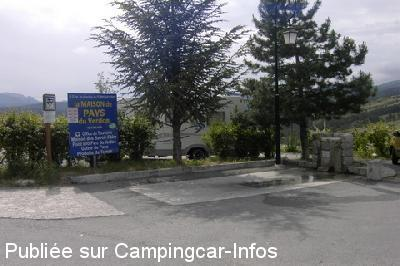
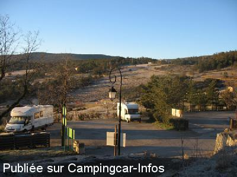
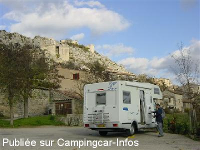

ASN = Aire de services avec stationnement nuit possible de :
TRIGANCE
(N° 775)
Accès/adresse :
Quartier Saint Roch
83840 TRIGANCE
83840 TRIGANCE
Latitude : (Nord) 43.76018° Décimaux ou 43° 45′ 36′′
Longitude : (Est) 6.44159° Décimaux ou 6° 26′ 29′′
Tarif : 2015
Stationnement, services : 5 €
Type de borne : Autre
Services :


Restauration
Autres informations :
Ouverte toute l'année.
10 emplacements en pente
Stationnement limité 2 jours
ot.trigance@free.fr
http://ot.trigance.free.fr

Le 19/06/2007 par FAROME 76

Le 21/02/2007 par bidouille

Le 20/11/2005 par jc.buron
de
JosBerBia
le 08/10/2015 :
§ De passage fin septembre, toujours à 5 euros avec électricité, eau, WC. Boulangerie avec produits régionaux, Boucher itinérant, Superbe panorama depuis son camping-car, Circuits de randos tous niveaux disponibles au SI. Superbe village.
§ De passage fin septembre, toujours à 5 euros avec électricité, eau, WC. Boulangerie avec produits régionaux, Boucher itinérant, Superbe panorama depuis son camping-car, Circuits de randos tous niveaux disponibles au SI. Superbe village.
de
McROY
le 18/10/2011 :
Nous y avons passé le week-end dernier, aire très calme avec un panorama magnifique, borne artisanale
très pratique, la cassette se vide dans les wc turcs
en face.
Prévoir une rallonge assez longue pour le branchement
électrique si d'autres CC sont déjà garés à proximité de la borne.
Nous y avons passé le week-end dernier, aire très calme avec un panorama magnifique, borne artisanale
très pratique, la cassette se vide dans les wc turcs
en face.
Prévoir une rallonge assez longue pour le branchement
électrique si d'autres CC sont déjà garés à proximité de la borne.
de
SENECH
le 21/04/2011 :
Superbe aire, avec un super point de vue, mais attention !! nous avons été victimes d'une tentative de cambriolage (fenêtre forçée au tournevis ..) il faut dire que cet endroit est trés isolé, mais fréquenté par de nombreux visiteurs,pas tous bien intentionnés.
Superbe aire, avec un super point de vue, mais attention !! nous avons été victimes d'une tentative de cambriolage (fenêtre forçée au tournevis ..) il faut dire que cet endroit est trés isolé, mais fréquenté par de nombreux visiteurs,pas tous bien intentionnés.
de
Samusingers
le 03/09/2010 :
Très petite aire (4 à 5 CC au maximum), à l'entrée du village (se visite à pied) dominant la campagne. Les services sont complets et bien accessibles. 5€ la nuit récupérés par une employée municipale très sympa le soir vers #####. Si pas assez de place, possibilité de stationner sur le parking contigu, un peu en pente. §
Très petite aire (4 à 5 CC au maximum), à l'entrée du village (se visite à pied) dominant la campagne. Les services sont complets et bien accessibles. 5€ la nuit récupérés par une employée municipale très sympa le soir vers #####. Si pas assez de place, possibilité de stationner sur le parking contigu, un peu en pente. §
de
Cool31
le 27/08/2009 :
Nous y sommes passés mi-août. Très joli village avec un petit parcours historique. La vue est splendide depuis le parking. Effectivement, nous avons dû utiliser les cales. Il y a bien des WC publics juste en face et le tarif pour la nuitée est de 5€. §
Nous y sommes passés mi-août. Très joli village avec un petit parcours historique. La vue est splendide depuis le parking. Effectivement, nous avons dû utiliser les cales. Il y a bien des WC publics juste en face et le tarif pour la nuitée est de 5€. §
de
F.GHIRONI
le 29/08/2008 :
A utiliser hors saison car l'été le parking est souvent utilisé par des voitures et comme il est en pente, le stationnement n'est pas confortable.
A utiliser hors saison car l'été le parking est souvent utilisé par des voitures et comme il est en pente, le stationnement n'est pas confortable.
de
jp le voisin
le 23/07/2008 :
5€ la nuit... Le site est calme, la vue est belle au petit matin, le village est pittoresque.
5€ la nuit... Le site est calme, la vue est belle au petit matin, le village est pittoresque.
de
Linares
le 14/10/2007 :
Très sympathique village et la boulangerie n'est pas une légende.
Très sympathique village et la boulangerie n'est pas une légende.
de
FAROME 76
le 31/05/2007 :
Tarif 5.50 €, Magnifique village, boulangerie au feu de bois.
Tarif 5.50 €, Magnifique village, boulangerie au feu de bois.